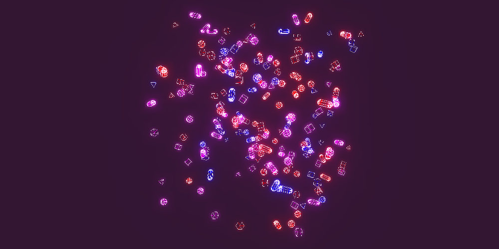

BoxFirTree - @author prisoner849 >>> discourse.threejs.org
FatLines_DataTexture_Animated - @author prisoner849 >>> discourse.threejs.org
VertexlessInstancedDataTexture - @author prisoner849 >>> discourse.threejs.org
 VertexlessInstancing
- @author prisoner849
>>>
discourse.threejs.org
VertexlessInstancing
- @author prisoner849
>>>
discourse.threejs.org
SpriteObjectPositioning - @author tfoller >>> discourse.threejs.org
GlowingWarmness - @author prisoner849 >>> discourse.threejs.org
RainbowGlow - @author prisoner849===Paul >>> discourse.threejs.org
BubbleGum - @author prisoner849===cywarr >>> discourse.threejs.org
InstancedMesh+GSAP - @author prisoner849 >>> discourse.threejs.org
OverWaves - @author prisoner849 >>> discourse.threejs.org
OMNICARD - @author prisoner849 >>> discourse.threejs.org
RotationQuaternion - @author tfoller >>> discourse.threejs.org
GLSL-Metaballs - @author biosphere + tfoller >>> discourse.threejs.org
TransparentVideoFragShader - @author Chris Johnson >>> discourse.threejs.org
.png) Drawrange(spherical-formation)
- @author prisoner849
>>>
discourse.threejs.org
Drawrange(spherical-formation)
- @author prisoner849
>>>
discourse.threejs.org
Shootingstar - @author drcmda >>> discourse.threejs.org
 Tetrahedra - @author prisoner849 >>> discourse.threejs.org
BarsWithProgressBar - @author prisoner849 >>> discourse.threejs.org
2D-shapesCollision - @author tfoller >>> discourse.threejs.org
RedCore - @author prisoner849 >>> discourse.threejs.org
DiamondSparkShader - @author Chaser_Code >>> discourse.threejs.org
Diamond - @author drcmda + N8Programs >>> discourse.threejs.org (see also https://n8python.github.io/diamonds/)
BasicSolarSystemExample - @author notchris >>> discourse.threejs.org
LowPolyIslandGenerationWithNoise - @author notchris >>> discourse.threejs.org
ProjectMONOLITH - @author prisoner849 >>> discourse.threejs.org
SelectCat - @author mjurczyk >>> discourse.threejs.org
LightCircleTest - @author Fyrestar >>> discourse.threejs.org
VertexColors - @author tfoller >>> discourse.threejs.org
 WaveAndPositionPlayers
- @author espace3d + Chaser_Code
>>>
discourse.threejs.org
WaveAndPositionPlayers
- @author espace3d + Chaser_Code
>>>
discourse.threejs.org
SimplifyFatLines - @author jrlazz >>> discourse.threejs.org
TemperatureDistributionOverlay - @author tfoller >>> discourse.threejs.org
StripsByOverlayingTwoSpheres - @author tfoller >>> discourse.threejs.org
GlobeNewsWebsite - @author forerunrun >>> discourse.threejs.org
SmokeFireSteam - @author Chaser_Code >>> discourse.threejs.org
EarthAtmosphereScattering - @author fwrdev + tfoller >>> discourse.threejs.org
UnrealBloom - @author prisoner849 >>> discourse.threejs.org
 SceneBackground
- @author malqanis + Mugen87
>>>
discourse.threejs.org
SceneBackground
- @author malqanis + Mugen87
>>>
discourse.threejs.org
BlurBackgroundTexture - @author Mugen87 >>> discourse.threejs.org
ShaderKit - @author Fyrestar >>> discourse.threejs.org
TextureWhileLoading - @author tfoller >>> discourse.threejs.org
Symmetry - @author prisoner849 >>> discourse.threejs.org
InteractiveColors - @author tfoller >>> discourse.threejs.org
DanceWithFlames - @author prisoner849 >>> discourse.threejs.org
LittleIslandScene(withButterflies) - @author N8Three >>> discourse.threejs.org
CYBER-ETHNO(windSimulation) - @author prisoner849 >>> discourse.threejs.org
Generative - @author prisoner849 >>> discourse.threejs.org
CardFlippingGame - @author jakedowns + DolphinIQ >>> discourse.threejs.org
Keyboard(MergedGeometries) - @author prisoner849 >>> discourse.threejs.org
Magic8Ball - @author prisoner849 >>> discourse.threejs.org
SelectiveBloomTroughAlphaMaterials - @author JuanP + prisoner849 >>> discourse.threejs.org
TetraFlow - @author prisoner849 >>> discourse.threejs.org
ClothExample(Migrated) - @author Mugen87 >>> discourse.threejs.org
FatLines+Noise - @author prisoner849 >>> discourse.threejs.org
ChangeColorOfWaveDots - @author Balaji + prisoner849 >>> discourse.threejs.org
NoisyMountains - @author prisoner849 >>> discourse.threejs.org
SynapsesFatLinesSelectiveBloom - @author prisoner849 >>> discourse.threejs.org
 NoiseIsolinesSelectiveBloom
- @author prisoner849
>>>
discourse.threejs.org
NoiseIsolinesSelectiveBloom
- @author prisoner849
>>>
discourse.threejs.org
ParallaxCorrectionEnvironmentMaps - @author Mugen87 >>> discourse.threejs.org
InstancedMeshSelectiveBloom - @author Zennyth + prisoner849 >>> discourse.threejs.org
GlowEffectOnLine - @author prisoner849 >>> discourse.threejs.org
HideObjects(CameraView) - @author HoraceShmorace >>> discourse.threejs.org
Walking - @author Chaser_Code >>> discourse.threejs.org
FatLineRunawayMemory - @author prisoner849 >>> discourse.threejs.org
FresnelShader - @author prisoner849 >>> discourse.threejs.org
MeshSurfaceSampler - @author prisoner849 >>> discourse.threejs.org
CapturePart(MouseSelected) - @author prisoner849 >>> discourse.threejs.org
BillboardShaderInstancesGeometry - @author Chaser_Code >>> discourse.threejs.org
MappingFidelity - @author Chrisssie vielzutun.ch >>> discourse.threejs.org
Joystick&OrbitControls - @author UI_UNICORN >>> discourse.threejs.org